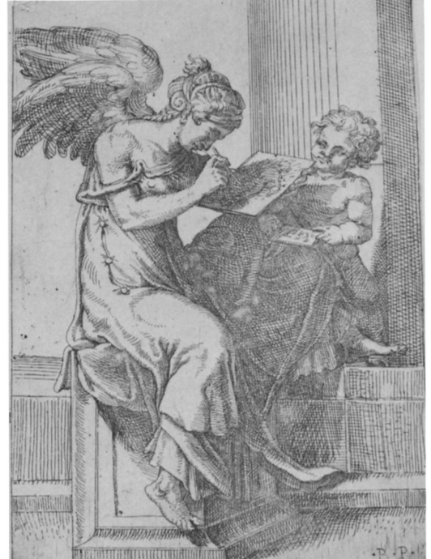
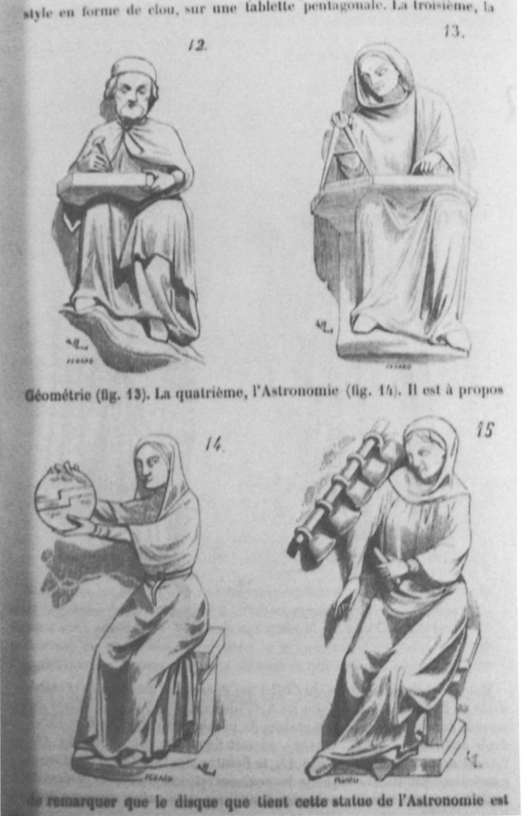
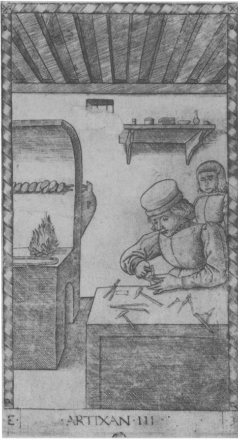
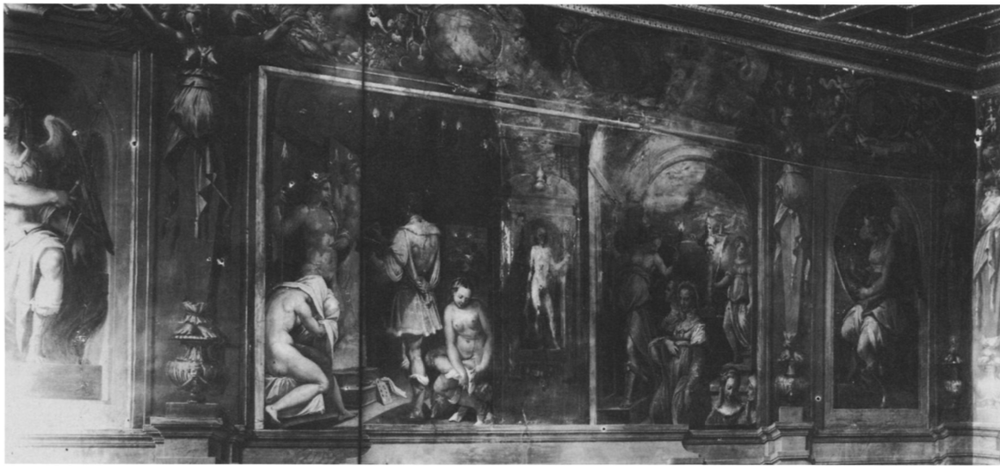
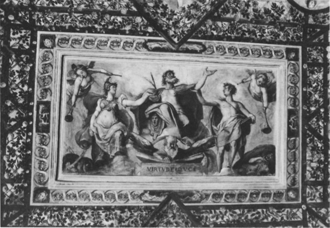
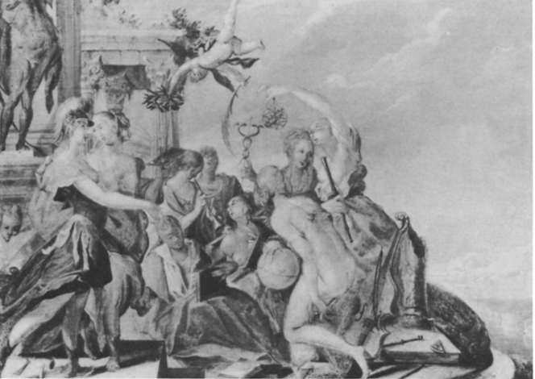

A Journey Through History, Culture & Innovation
In her Self-Portrait as the Allegory of Painting, Artemisia Gentileschi (1593-ca. 1652) made an audacious claim upon the core of artistic tradition, to create an entirely new image that was quite literally unavailable to any male artist. Her apparently modest self-image was, moreover, a sophisticated commentary upon a central philosophical issue of later Renaissance art theory, indicating an iden- tification with her profession on a plane of greater self- awareness, intellectually and culturally, than has previously been acknowledged.
In the Self-Portrait, which at present hangs in Kensington Palace (Fig. 1), Artemisia depicted herself in the act of painting, accompanied by several, though not all, of the attributes of the female personification of Painting as set forth in Cesare Ripa's Iconologia. These include: a golden chain around her neck with a pendant mask which stands for imitation, unruly locks of hair which symbolize the divine frenzy of the artistic temperament, and drappo cangiante, garments with changing colors which allude to the painter's skills. In 1962 Michael Levey confirmed the identity of the artist through a comparison with other seventeenth-century images of Artemisia and connected the picture with Ripa's description of Pittura. Levey's interpretation of the work as a self-portrait of the artist in the guise of Pittura has gained general acceptance. Yet although his interpretation is iconographically correct, it remains iconologically incomplete, for the artist's unique artistic achievement has gone curiously unnoticed, a point best illustrated by Levey's remark that "the picture's real intention [might] have been earlier recognized if it had been painted by a man." The fact is, no man could have painted this particular image because by tradition the art of painting was symbolized by an allegorical female figure, and thus only a woman could identify herself with the personification. By joining the types of the artist portrait and the allegory of painting, Gentileschi managed to unite in a single image two themes that male artists had been obliged to treat separately, even though these themes often carried the same basic message. A brief look at some concerns reflected in pictorial treatments of these two themes will shed light upon the dilemma faced by male ar- tists who had to keep them separate. It will also clarify for us Artemisia's own intention in this work and, more generally, her ideas on the art of painting
Pittura, or the allegorical representation of the art of painting as a female figure, made her appearance in Italian art sometime in the first half of the sixteenth century, along with the equally new female personifications of sculpture and architecture. Vasari was the first artist to make systematic use of female personifications of the arts. We find them in the decorations of his house at Arezzo (Fig. 2), in those for his house in Florence (Fig. 6), and on the frames of the individual artist portraits that head the chapters of the Vite.5 The earliest sixteenth-century image of Pittura that I know was painted by Vasari in 1542, in the Stanza della Fama of his Arezzo house, along with images of Scultura, Architettura, and Poesia. Each is shown as an isolated female figure, seated and seen in profile, engaged in practicing the art she symbolizes. Vasari's archetypal Pittura is closely echoed in the mid-sixteenth-century engraving representing Pittura by Bartolommeo Passerotti (Fig. 3), and she appears in art with increasing frequency in the later sixteenth and the seventeenth centuries.
Fig 1. Artemisia Gentileschi, Self- Portrait as La Pittura. London, Kensington Palace, Collection of Her Majesty the Queen (photo: Lord Chamberlain's Office, St. James's Palace)
Fig 2. Vasari, La Pittura. Arezzo, Casa Vasari (from Barocchi, Vasari pittore)
Fig3. Passerotti, La Pittura. (photo: Metropolitan Museum of Art)
The sixteenth-century creation of a noble personifica- tion for the art of painting constituted a kind of status symbol for that art, indicating the moment of its social and cultural arrival. In the Middle Ages, painting, sculpture, and architecture had not been included among the Liberal Arts. The Trivium (Dialectic, Rhetoric, and Grammar) and the Quadrivium (Arithmetic, Geometry, Music, and Astrology) were established as the canonic seven arts in the fifth-century allegorical treatise of Martianus Capella, and in manuscripts and in sculptural cycles they were usually depicted as female figures, following the Roman tradition of allegorical personification, although the artes liberales themselves were not personified in antiquity. Painting and Sculpture were occasionally included in Liberal Arts cycles on the porches of medieval cathedrals, specifically those of Sens, Laon, and Chartres (north), and on the Florentine Campanile. Invariably in these last in- stances, however, the personifying figure for Painting or Sculpture is not female but male, even when, as at Laon (Fig. 4), all of the other arts are shown as women. The dis- tinction is significant. These figures do not represent the Fine Arts, as has been suggested, since the Fine Arts did not yet exist as a concept, but rather the Mechanical Arts, or what would later be called the crafts. In contrast to their female neighbors, the male figures who stand for the guild-controlled crafts of painting and sculpture are not really personifications; rather, they represent artisans, And this in turn reflects the status of these arts. Painting was not yet conceived as an activity whose practical aspect was subordinate to an intellectual or spiritually significant dimension, and thus it was not yet considered worthy of personification as an abstract entity, even though its progress toward that level was indicated by its occasional inclusion in medieval Liberal Art cycles.
In the fifteenth century, the seven Liberal Arts were raised to ten with the addition of Poetry, Philosophy, and Theology, as can be seen in the Tarocchi engravings, published in the 1460's, and also on Pollaiuolo's Tomb of Sixtus IV in the Vatican, of around 1490, where Poetry was replaced by Perspective. Painting and Sculpture were still not included among the Liberal Arts,'2 despite the earlier efforts of Ghiberti, Alberti, and the humanists to secure the position of these arts as noble pursuits.'3 The inferior position of Painting in the quattrocento, both in the intellectual order and in the popular imagination, is documented graphically in the scheme of the Tarocchi engravings, with its fixed sequence of levels of being and 12. human practitioners of the activities to which they refer. A of value.'4 In the hierarchy of the Tarocchi, Painting is not included among the Liberal Arts; indeed, the Artisan (Fig.5) appears in the very lowest category, the so called conditions of Man, where he is superior only to the Servant. The Conditions of Man, in turn, is separated from the third highest category, the Liberal Arts, by the inter- mediate class of Apollo and the Nine Muses, who also symbolize the arts, but, again, not the visual arts.'s The structure of the Tarocchi vividly illustrates the tradition Laelonardo's famous argument for the inclusion of position of the arts of painting and sculpture in thepasinoctinalg (though not sculpture) among the Liberal Arts on order, before they joined the Liberal Arts in the earlyacscixo-unt of its genesis in the imagination need not be teenth century as a consequence of the successful efforts of leonardo and Michelangelo to elevate them from manual to intellectual activities. 
Fig 4. Laon Cathedral, figures from Liberal Arts included among the Liberal Arts; indeed, the Artisan (Fig. cycle (from Viollet-le Duc, Dictionnaire raisonnk,II, figs. 12-15)
Fig 5. The Artisan, Tarocchi engravings, E series (photo: National Gallery of Art)
Laelonardo's famous argument for the inclusion of painting (though not sculpture) among the Liberal Arts on account of its ts genesis in the imagination need not to be recounted here. Less familiar is one practical result of the acceptance of Leonardo's point of view: only when the art of painting was understood to involove inspiration and to result in a higher order of creation that the craftsman's product did it become appropriate to symbolize the art with an allegorical figure. It must remain an open question how female personifications originally came into being, yet on an expressive level a female personification for Pittura could usefully signal, through the very unusualness of her connection with an activity largely practiced by men, that she stood for Art, an abstract essence superior to the mere existence of artists. Thus she could assist in conveying the concept that art was separate from the manual labor connected with its making. It may be more than coincidence, then, that Vasari’s images of Pittura and Scultura at Arezzo, apparently the first to present these arts as allegorical female figures, should have been created two years after the celebrated motu proprio of Paul III, which officially declared sculpture to be a free art, exempt from the jurisdiction of guilds.
The pictorial elevation of the position of art above that of individual artists held immediate advantages for artists themselves who, in enlightened self-interest, sought to raise the status of their profession. As Tolnay has pointed out,18 the theoretical separation between the fine and the mechanical arts during the Renaissance was intimately bound up with the social separation between artist and artisan. The social problems posed for the later sixteenth-century Florentine artist by the association with manual arts that still attached to him, despite the personal attainments of Leonardo and Michelangelo, and the theoretical defenses developed by artists to combat this stigma have been extensively described in Blunt’s classic account.19 Similarly, Pevsner has definitively characterized the official formation of the Florentine Academy in 1563 as the outcome of a series of efforts by artists to raise their own social status by creating a new organizational structure that would effectively free them from their dependence on individual guilds, and from an essentially medieval system that still lingered in Florence.20 The inevitable consequence of these concerns and efforts, an aspect that has received somewhat less focused art-historical attention, was that art itself was drawn into the service of propaganda, for the greater glory not of God, but of art and artists. It was surely for this purpose that Vasari created, shortly after 1561, about the time that the Academy was founded, a much fuller-blown Allegory of the Arts in his painted decoration for a room in his house in Florence. In this cycle, Vasari alternated personifications of the arts with narrative scenes from the life of Apelles, and added a row of portraits of famous painters along the tops of the walls (Fig. 6).21 The campaign to elevate the status of art was extended to Rome, where the counterpart for Vasari’s cycle can be seen in the residence of Federico Zuccaro, who was the principal founder of the Accademia di S. Luca, the institutional successor to the Florentine Academy. Zuccaro’s ceiling fresco of 1598 in the Palazzo Zuccaro depicting the Apotheosis of the Artist (Fig. 7) presents an idealized male artist accompanied by Athena and Apollo, the protectors of the arts, who also serve here to sustain the allegorical mode. The spreading effort to propagandize on behalf of the elevated status of art paralleled and sometimes preceded the foundation of art academies, a phenomenon exemplified by a painting, Athena Introducing Pittura to the Liberal Arts, by Hans von Aachen (Fig. 8), executed in Cologne around the turn of the seventeenth century.”3 In this work, as in the Italian examples, the glorification of art is coupled with enhancement of the social position of the artist through the use of personifications, generally female, to set the narrative on an ideal plane.
Fig 6. Vasari,Sala dela Fama. Florence, Casa Vasari (photo: Florence, Soprinten- denza alle Gallerie)
Another mode of propagandizing for the status of art, and the second thematic tradition to be examined here, was self-portraiture in which the artist’s personal status as a gentleman was emphasized. Self-portraits such as that by Antonio Moro in the Uffizi (Fig. 9) in which the artist stands before his easel, holding palette, brushes, and mahlstick, yet with the menial implications of these tools offset by his fine clothes and by the attachment to the blank canvas of a poem written in Greek, were clearly intended to place the painter among the learned and to differentiate him from the mere artisan. An even more pointed expression of the social prestige of the artist can 
Fig 7. Zuccaro, Apotheosis of the Artist ceiling (photo: Biblioteca Heatziana)
Fig 8. Hans von Aachen, Athena Introducing painting to the liberal Arts. Brussels, Collection Mrs. Sonia Gilbert (Photo: Warburg Institute)
be found in the numerous self-portraits of the sixteenth and seventeenth centuries that depict the artist wearing a golden chain, a reminder of the rank conferred upon him by a ruler. Perhaps the noblest example of this genre is Titian’s Self-Portrait of ca. 1550 in Berlin (Fig. 10), which shows the painter wearing the tokens of rank given him twice by the Emperor Charles V. Such an expression of the social exchange between ruler and artist, and of their comparable prestige, had as its original model the relationship between Alexander the Great and Apelles, symbolized in the story of Alexander’s gift to the artist of Campaspe, the Emperor’s favorite mistress and the painter’s model. This legend became a popular theme in its own right in Renaissance art, as well as a metaphor for the exalted status of painting, a development that is illustrated in a print designed by the seventeenth-century French artist Sebastien Bourdon (Fig. 11), in which the Apelles and Alexander theme is used to symbolize the art of painting, as its label PICTURA clearly shows.
As these examples demonstrate, the modes of expressing the nobility of the art of painting and the dignity of the artist proliferated in the Renaissance. Unfortunately for artists, however, each of the modes carried certain inherent disadvantages. In the first place, indirect allegorical expression, whether through the personification of Pittura or the legend of Apelles, did not permit the painter to enhance directly his own personal status by the image he had created unless, like Vasari or Zuccaro, he placed it on the walls of his own house. On the other hand, a self-portrait that included a badge of social distinction like the golden chain did not make immediately clear that the sitter was an artist unless he was already famous enough to be recognized on sight, since other kinds of noblemen were awarded golden chains and medallions by princes and rulers. Yet if the artist resorted to including studio paraphernalia in the picture, he risked evoking the very association with manual labor that he sought to escape, no matter how fine his clothes; and the finer the clothes, the more out of place he looked in the studio, as a Northern example reveals (Fig. 12). In short, whereas the inclusion of artists’ attributes tended to undermine the message that art was a noble occupation, the use of an allegorical personification tended to exclude portrayal of the individual artist
Baccio Bandinelli stands out in the sixteenth century as one artist who was able effectively to convert the image of the artist’s studio into a metaphor for art itself in its higher, unmechanical aspects. The engraving of 1531 by Agostino Veneziano of Bandinelli’s " academy" (Fig. 13), and a counterpart engraved some twenty years later by Aenea Vico, are both presumed to follow Bandinelli’s own designs. These prints illustrate yet another way that the artist might attest the noble and intellectual character of his profession, by showing the workshop as a place where the arts were debated and compared as well as practiced.30 This idea is expanded upon in an early seventeenth-century engraving by P. F. Alberti that depicts an academy of painters, as the inscription states (Fig. 14), whose specific groupings and spirit of analytical discourse intentionally recall Raphael’s School of Athens.31 That august association can only have boosted the image of the arts, yet in both these examples the connection of the artist-author with the academy he depicted remains tenuous, depending for the Bandinelli upon the inscription alone. It is perhaps in some measure indicative of a lingering problem for the artist who sought to associate himself with the rising status of his profession that one of the culminating examples of this workshop/academy tradition, Pietro Testa’s engraving of the early 1640’s, the Liceo della pittura (Fig. 15), contains a poignant personal emblem, a snake and stone in the lower right corner, to stand for Testa himself, who as a living artist had no place in the ensemble of ideal characters he had created.
Ironically, then, although the idea of painting as a noble pursuit had acute personal relevance for every practicing artist of the sixteenth and seventeenth centuries, direct personal identification with the elevated status of art was only possible for the male artist through indirect and sometimes very awkward combinations of attributes. Two final examples may help to confirm this point. In one of several self-portraits that include his golden chain (Fig. 16), Van Dyck displays his trophy with naive pride, at the same time pointing very self-consciously to a giant sunflower. Both attributes symbolize the art of painting, and form a composite expression of the artist’s devotion to “his King, to God and to the art of painting.” An equally ingenious though aesthetically deficient solution was offered by G. D. Cerrini (Fig. 17), who, in a painting of the mid-seventeenth century, combined the Allegory of Painting with a self-image by having the female personification hold forth a portrait of the artist.24 When, in his Self-Portrait of 1650, Poussin reversed this arrangement, positioning himself as the living character in the center and alluding to Pittura in a painted image behind,35 he created what is surely a superior work of art, and a more naturalistically plausible combination of artist and allegory, yet these entities still, necessarily, remain separate.
The prevalence of combined images such as these illustrates a continuing desire on the part of artists to link themselves with the elevated concept of art, yet in the very period when it mattered most, the allegorical conventions employed to promote that concept proved resistant to the inclusion of the living artist. Self-portraits might contain allusions to art, allegories of the arts might stand next to artists’ portraits, Apelles or Minerva might be invoked, yet all possible forms of joining the two components were inevitably elliptical. And although elliptical or proliferated forms of expression, mixing ideal and real, were compatible with the tastes of maniera artists, the general preference in the seventeenth century for rendering complex abstract ideas sensate and clear through simple, cohesive images invited a more direct and naturalistic form of combining pittore with Pittura.
In these terms, Artemisia Gentileschi’s Self-Portrait as La Pittura may be considered the quintessential Baroque version of the theme of the Allegory of Painting. In Artemisia’s radically simplified picture, by contrast with every other example here discussed, the artist emerges forcefully as the living embodiment of the allegory. Here, painter, model, and concept are one and the same, and the environment of the artist’s studio is evoked by the barest of means. Unselfconsciously engaged in the act of painting, the artist appears oblivious of the golden chain that has slipped aside on her breast, as if to indicate that the chain is hers by natural right, as an attribute of the personification whose identity she assumes. Similarly, the unruly locks of her hair are more than a symbolic reference to inspiration, as Ripa had it; they suggest, in this context of concrete naturalism, the painter’s guileless indifference to personal appearance while caught up in the heat of work, a state of mind that contrasts sharply with that of contemporary male artists whose self-portraits indicate their efforts to look like gentlemen. Because of her identity as a woman, Artemisia was in a position to take creative advantage of the allegorical tradition, and to make a statement that was at once more humble and more profound.
Every writer on Artemisia’s Self-Portrait has suggested that the picture’s subject, dependent as it is upon Ripa, must have been dictated to the artist by a learned patron like Cassiano dal Pozzo.36 There is no evidence, however, that the painting was ever part of Cassiano’s collection (see Appendix), and since it was not painted for any other known patron, this proposal is gratuitous. We must resist the notion that a painting that draws upon Ripa’s Iconologia necessarily displays a scholar’s erudition. Although Ripa composed the Iconologia as an academician interested in the complex literary and artistic strands that made up the composite images,” many artists subsequently consulted the book for the purpose of creating broadly comprehensible images, not for the sake of arcane or erudite allusions. Moreover, a close study of Artemisia’s painting in relation to Ripa’s description of Pittura reveals that the artist made purposeful and selective use of her text, extracting from it for emphasis precisely those features which were of greatest philosophical interest to artists.
Ripa had called, for example, for Pittura’s dress to be of drappo cangiante, a phrase that can be traced to Lomazzo, who in his treatise of 1584 describes it as a virtuoso technique practiced by painters of his day to demonstrate their skill in handling color.38 To play the changes, Lomazzo explains, an artist painted a passage of cloth with one color in the lights and a different hue in the shadows. As Artemisia runs magnificent violets and greens through the cloth of the sleeves, she demonstrates a knowledge of the technique as well as her own ability to handle color with skill and flourish. Yet on a more subtle level, she develops rich, carefully adjusted color relationships throughout the painting, sustaining the dominant red-brown of the background in the bodice, harmoniously balanced with the dark green of the blouse and the blue-violet highlights of the sleeves; she modulates flesh to white highlights to establish spatial planes with great precision, and she recapitulates the color scheme of the painting in the five patches of color on her palette. The color changes employed in the Self-Portrait are not simply embellishments added to make it conform to an iconographic specification, but, rather, they reflect Artemisia’s use of Ripa’s suggestive phrase as an opportunity to display, through her own interest in and command of color, the technical skill appropriate to Pittura herself, and perhaps even to take a position as well on a continuing controversy of art theory, aligning herself as she does with colore over disegno.
In a theoretical vein quite contrary to Artemisia’s expressive emphasis, Ripa also stipulated that Pittura wear a long dress covering her feet, in order to establish a metaphorical relationship between the covered female body and the ideal proportions of painting, set down in the underdrawing but disguised in the final work, when the color — the clothing, as it were — is added. In this formulation, Ripa followed a set analogy between female beauty and perfection of proportions that frequently appeared in sixteenth-century Italian theoretical treatises, in which, as Elizabeth Cropper has shown, female beauty served as a metaphor for the perfection of urns, columns, and even art itself.40 Gentileschi, however, disregards this focus upon disegno and proportionate anatomical form as the essence of painting. Significantly, she ignores Ripa’s overt suggestion that she convert the female image into a vehicle for a rhetorical conceit. Leaving out the skirt and feet altogether, she places herself in a foreshortened, transitory, and active pose that prevents the viewer's discovering conventional beauty, symmetry, proportion or even the arched eyebrows that Ripa had emphatically specified.
Throughout the entry on Pittura, Ripa carefully interweaves the themes of the pure intellectual beauty of painting and the physical beauty of women, in order to reinforce the cerebral, and therefore noble, character of the art of painting. In this, he adopts the device of the Mannerist painters, namely, the creation of a formula by which women’s bodies stand for men’s minds. Women, in this conception, do not share in the cerebral bounty of the art they symbolize. The misogynist basis of the lofty theme sounded by Ripa is revealed in a satirical Italian print of the seventeenth century, a woodcut that illustrates a popular maxim (Fig. 18). " Women,” the maxim asserts, “often have long dresses and short intellects."42 This particular misogynist conception can be traced as far back as the Rig Veda ("The mind of woman brooks not discipline. Her intellect has little weight.")43 and as far forward, in the Gentileschi literature alone, as Longhi’s appraisal of 1916 that she was “una pittrice di razza, manualmente; come intelletto soltanto inferiore; anche a suo padre."44 Although contemporary judgments of Artemisia’s intellectual capacities have not survived, we do find in the artist's correspondence occasional expressions of a heightened sensitivity to conventional views of woman’s ability. Writing in 1649 to her Sicilian patron Don Antonio Ruffo, she described to him some of her forthcoming paintings, concluding defiantly: ‘And this will show your Lordship what a woman can do."45 In another letter written to Ruffo in the same year, Artemisia remarked expansively, “You will find the spirit of Caesar in this soul of a woman.” 46 In this statement, the artist’s play on words (Caesar’s animo, her anima) serves to underscore the gender difference that makes her claim unorthodox. Yet the claim itself boldly transcends sex differences, for she applies to herself a literary formula that was typically used to characterize important men in the Renaissance, in which the contemporary figure is compared to Alexander the Great, Caesar, or another antique luminary. Ambition could not have been made of sterner stuff.
Our user-friendly interface allows you to seamlessly navigate between articles and visualize their locations on an interactive map, while our commitment to editorial excellence ensures that every piece is engaging, informative, and accurate. The Discovering Bologna team has meticulously crafted every typographic detail, from font families and sizes to colors, margins, aspect ratios, and captivating images with captivating captions, to truly reflect the graphic theme and ambiance of this captivating city.
Join us on this digital adventure and explore the wonders of Bologna like never before, all from the comfort of your own home. Discovering Bologna: Unraveling the secrets of the city, one story at a time.